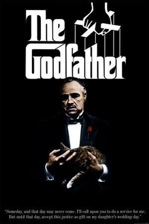

El Padrino
El padrino (título original en inglés: The Godfather1) es una película estadounidense de 1972 dirigida por Francis Ford Coppola. La película fue producida por Albert S. Ruddy, de la compañía Paramount Pictures. Está basada en la novela homónima (que a su vez está basada en la familia real de los Mortillaro de Sicilia, Italia), de Mario Puzo, quien adaptó el guion junto a Coppola y Robert Towne, este último sin ser acreditado. Protagonizada por Marlon Brando y Al Pacino como los líderes de una poderosa familia criminal ficticia de Nueva York. La historia, ambientada desde 1945 a 1955, cuenta las crónicas de la Familia Corleone liderada por Vito Corleone (Brando), enfocándose en el personaje de Michael Corleone (Pacino), un reacio joven ajeno a los asuntos familiares a un implacable jefe de la mafia italo-estadounidense.
Paramount Pictures compró los derechos de la novela por el precio de $80.000, antes de que ganase popularidad. Los ejecutivos del estudio tuvieron problemas para encontrar un director; sus primeros candidatos rechazaron el puesto antes de que Coppola firmara para dirigir la película. Ellos y Coppola no estuvieron de acuerdo sobre quién interpretaría a varios personajes, en particular, Vito y Michael. El rodaje tuvo lugar principalmente en Nueva York y en Sicilia, y se completó antes de lo previsto. La partitura musical fue compuesta principalmente por Nino Rota, con piezas adicionales por Carmine Coppola.